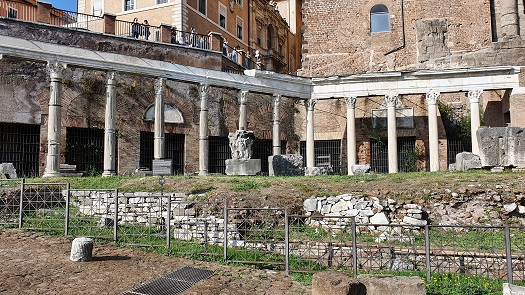
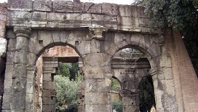
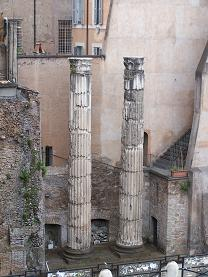

|
Pórtico de Octavia
El Pórtico de Octavia fue dedicado
por Augusto a su hermana Octavia la Menor, en el lugar del Porticus
Metelli, junto al Teatro de Marcelo. Sufrió un incendio en el año
80, restaurado por Domiciano, y posteriormente por Septimio Severo y
Caracalla tras un segundo incendio. Estaba adornada con mármoles y
tenía muchas obras de arte famosas.
El recinto incluía una biblioteca levantada por Octavia en memoria
de su hijo Marcelo, la curia Octaviae, y una schola. Se desconoce si
estos eran parte de un solo edificio o eran construcciones
independientes.
Durante la época medieval, fue utilizado como mercado de pescado,
cuyo uso perduraría hasta finales del siglo XIX. El barrio Judío. |

|
Pórtico de los Doce Dioses
Su forma actual es del año 367 cuando el
prefecto de la ciudad Vetio Agorio Praetextatus realizó algunos trabajos
de ampliación. Son doce columnas, una por cada dios: Júpiter, Juno,
Minerva, Vesta, Ceres, Diana, Venus, Marte, Mercurio, Neptuno, Vulcano y
Apolo. Las estatuas de bronce, que estaban detrás de las columnas,
fueron llevadas posteriormente al Pórtico de los Dioses Consentes,
situado cerca del Tabularium, al sur del Templo de Vespasiano y Tito. |

Pórtico de monte Caprino
El pórtico está al pie del
Monte Caprino, el pico sur del Capitolio. En 1933, durante la demolición de edificios
medievales se descubrió el pórtico romano. El edificio superior es el
Instituto Arqueológico Alemán.

Pórtico Minuciae
Se descubrió en 1930 con
la ampliación de la calle. El lado izquierdo de la calle fue ocupada
previamente por Porticus Minuciae y el lado derecho por el Teatro di Balbo.
Era un patio rodeado de edificios bajos que se utilizó para la
distribución de los productos básicos. Dos columnas de un templo que se
encontraba en el centro han sido reconstruidas.

MENÚ |